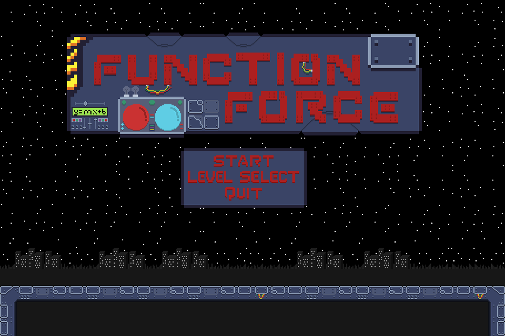
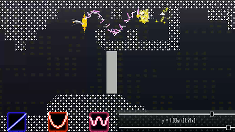

Kirby Cofino
Game Designer & 3D Artist

Game Designer & 3D Artist
My specialities are systems and game design. I work mainly with Unreal Engine and Unity3D.


Function Force is an educational game to teach middle-schoolers linear algebra (y=mx + b).

Title Screen.
Function Force was originally conceived during a game jam at the White House by my professors at American University.
Our task (myself and two other students) was to redesign the core concept and make it our own, over the course of a semester, for ETS to use as part of an initiative of game based tests (developed in early 2017). I did all the leve and puzzle design, as well as some of the art. I was also key in the systems design, however it was a very collaborative process where we all built off of each other’s ideas, therefore I can’t claim all the credit.
Although the original function force was technically a shoot ‘em up game, in practice it played more like a puzzle game. We decided to emphasize the real-time nature of a shoot ‘em up game.

The slider based system for operating the gun using the mouse is at odds with controlling the ship itself.
Responding to moving threats would be very difficult for players.
Function Force was sponsored primarily as a game-based testing application, which is at odds to the dextrous nature of a shoot ‘em up game. Ideally, test administrators would be able to measure mastery over mathematical concepts distinctly from the skill involved in playing a game. How can we, as the designers, deliver a sterile testing environment while also making a fun shoot ‘em up?
Our solution was to split up levels into shooting sections and puzzle sections, with shooting sections containing soft teaching/testing moments and puzzle sections requiring only mastery over the mathematical content to progress.

Although players could avoid enemies, levels and content were designed to foster use of a laser which follows the y=mx+b formula.
Scoring helps to record whether the player was able to destroy enemies or only avoid them.
ETS let us know that they wanted more testable moments, moments where they could tell whether or not the student had mastered the concept. This translated for me to designing content which was impassible without the correct formula plugged into your laser. With that in mind I came up with and designed the tunnel sub-sections found in some portions of the shooting sections.

Only the tunnel sections required mastery over the mathematical concept
Can we include a progression system to introduce the content to players in a staggered manner? We’d like to foster engagement and support a staggered difficulty/learning curve.
Our solution was to introduce powerups (called satellites) which act as extra guns that fly next to your original ship, similar to upgrading your laser in other shoot ‘em ups. Originally we were thinking of sine wave lasers, reflective surfaces, and other ways to implement satellites (such as dropping them at locations as consumable), but decided on this implementation due to it’s synergy with shoot ‘em up mechanics and its usefulness and simplicity in both puzzle and shooting sections.

Power-ups (Satellites) which follow the player and can be adjusted via the testing content (y=mx+b)
The puzzle sections that we introduced had a scaling difficulty to them. As players collected more satellites the puzzles became harder because players would have to hit more "locks" with their lasers to progress. What was initially a simple puzzle mechanic became an interesting and powerful testing mechanism.

A puzzle section in the later stages of the game.
It requires players to hit 3 locking mechanisms at the same time to progress
Having a progression system with these elements enabled:
-More complex puzzles to test the player’s understanding of core mathematical concepts
-The ability to teach and test a deeper understanding of y=mx+b
-More space for player improvement and play
By splitting up the game into shooting and puzzle sections, we were able to pace the experience such that it is constantly engaging. This also allowed for a variety of testable/teachable moments through level and enemy design.
Additionally, adding satellites introduced the ability to have more complex puzzles and difficult enemies, both of which increase player enjoyment.
We were effectively able to take a concept and effectively change it’s implementation to better suit both the client’s needs and the medium.
During the summer of 2017, I worked on an iteration of the HALEF system for ETS, as part of a full-time internship in San Francisco, California.
I worked primarily alone, but was supported during some parts of the learning process by other team members.
You can read more about the process in this research paper we published
here.
HALEF is a multi-modal dialogue system; put simply, it is a computer system with which users can interact through spoken dialogue. Utilizing HALEF, it is possible to have a unique conversation with a computer.
Previous iterations of HALEF suffered from multiple issues, ranging from unacceptable long load times (10+ minutes);
audio and animations becoming out of sync; and poor lip animations. When starting work on this system,
I was told that the priorities were to cut down on load times and keep the project open source (no proprietary software/techniques).
Due to the incredibly long load times, ETS was considering moving from Unity to other engines/javascript libraries (such as three.js)

Previous iteration of the HALEF avatar.
I had previously done research into mobile game applications and learned that web and mobile game development were very different from console or pc development. Every asset was created with its file size in mind, to reduce load times, leading to low poly models, 2D art, and low-resolution textures. With this in mind, I advocated for a low-poly 3D aesthetic, as 3D was central to the team’s future goals.

My texture palette for the project, a whopping 5kb on disk. A second palettte was used for the
office itself, which was also ~5kb.
I used Blender, an open source 3D modeling program, as well as open source libraries such as Socket.IO to keep the project 100% open source.
Additionally, I researched ways to reduce Unity WebGL file size, and possible alternative solutions to using Unity.
Luckily, I found that there was an upgrade to Unity’s WebGL functionality (the introduction of engine code stripping)
that helped immensely to reduce file size/load time. With the addition of a low-poly workplace and avatar, which I built from scratch,
we were good to go. I used Blender to model, texture, rig, and animate the avatar.

The low-poly feel, although unusual for a project of this nature, fit the goals and requirements very well.
Flat shading helped pull off the look and increase performance.
For the animation and sound problems, I decided that the best way to eliminate a discrepancy between audio and video would be to
rearchitect the way in which sound and animations were called.
Rather than embedding the audio in the webpage and calling
for it using javascript, as the previous iteration had, I included the audio inside the Unity web blob.
Rather than animating the avatar on the update loop (via blendshape normalized values called by code), as the previous iteration had, I controlled
animations by creating them in Blender and exporting them into Unity. This allowed me to play an entire animation with a single message,
which was useful for keeping audio and video in sync.
Mouths were animated using the Papagayo + JLipSync plugin
pipeline in Blender, which was a perfect solution for our needs. It offered a robust way to account for new dialogue,
while also becoming more efficient the longer we used the same models. This is because it works by setting up phoneme shapes,
such as 'o', or 'L', and interpolating values between those mouthshapes (rather than hand animating every mouth movement).

Papagayo is used to insert keyframes for mouth movement via an intuitive GUI.
Because I fundamentally changed the way in which the HALEF system interacts with the Unity web blob (due to my flow rearchitecture and the a Unity issued updated WebGL format) I had to change how messages were passed to the different parts of the system.

The Unity web blob lives inside the client's browser page via websocket messaging it interacts with the server,
which reads the scenario from a unique conversation file.
I first added hooks in the Unity web blob which could be accessed via javascript run on the html page, then I had the system pass a message to Unity depending on it's status through the javascript running on the html page.

The system feedback loop is illustrated here. HALEF (the system) output phrases then based these outputs to Unity to represent it's decision to the user.
The user responded, which was carried back to HALEF via the freeswitch platform, etc.
By doing so I could tell HALEF to pass a message to Unity, which would fire both the necessary animation and play the necessary audio, eliminating any possibility for desynchronizing.
To get this project to work properly, I had to use WebSocket messaging, HTML, javascript, and C# to trigger actions and responses. Additionally, I had to use Blender to model, texture, rig, and animate the avatar; I was also responsible for creating mouth and lip animations which synced to pre-existing audio.
Doing the above, I developed a working, low load-time application, complete with a decent looking 3D model. It was an incredible experience to be able to immerse myself in that pipeline, which was almost entirely new to me, while thinking critically about how each part affected the final product, and what I could do to eliminate the bugs in the previous iteration. There was a lot of learning on the job, but even so, I am proud that I was still able to deliver a product that both ETS and I approved.
Because of my contributions, I was offered a contract position to work part-time with ETS while I finished my master’s degree in Game Design at American University. I am currently working on the next iteration of HALEF as I pursue my degree (shown here):

Current iteration of HALEF depicted, I am still continuing work on improving the system and the pipeline. We
are currently researching Mo-Cap inclusion for wider usability and adoption of the system.
4 Floors was conceived as a way to represent a side-scroller with RPG elements via a tabletop format. The game was always meant to be accessible to non-gamers, as well as function as a cooperative, multiplayer game. This was developed in 3 weeks in 2016 with a team of 2 people.
We decided to go with a side-scroller-like format of multiple consecutive battles. Initially, there was no resource to exchange for strong actions such as trading mana to cast spells. Also, all monster groups were decided based on singular dice rolls, leading to an incredible variance between groups. Some groups were comprised of 1 monster and some of 6. Additionally monsters 1 room away could attack players, and players could attack them if they were ranged characters. Create and insert images to help visualization
People found combat had too much uncertainty. Sometimes it was an easy fight, and sometimes, due to high consecutive dice rolls when spawning monsters, it was very hard. Specifically, if the second room was full of ranged units, dealing with them was very hard. Additionally, people felt that there should have been a progression system in the game. We tried to streamline this by adding 2 unique skills for each class to use, instead of an attack, but it seems to have not fit the expectations of players. Finally, combat felt too simple, since all enemies just hit single targets and had no other effects. It was really a clash of numbers that didn’t allow for much depth or strategy, due to the intended simple design. Also, no one wanted to play the healer.
I advocated for an architectural approach to level design. I had been reading A Pattern Language, a book suggested to me by Christopher Totten, my professor at the time, which detailed the effects that intentional architectural design could have on the lived experience.
I decided to split up each battle into separate occurrences, instead of drawing random monsters and putting them in a group together with ranged and melee in the same row of creature. I split up the two monster types into two lines of enemies, each with their own ruleset.
In addition to this, I made a room deck for each floor which contained double the number of rooms needed to progress to the next floor, creating a procedural dungeon-type experience, due to the different amounts and types of enemies encountered in the different types of rooms throughout each playthrough.
Also, I introduced a range, depending on the intended difficulty of the encounter, of how many enemy units can exist in that room. In practice, this was attained by rolling a single die until the cumulative total was within that range
Example: In a room which specifies 4-7 monsters, if a player rolled a 3, they would have to roll again, and if that second roll was a 2, they would end up with a 5 monster group of enemies.
Additionally, to give a sense of distinction to each room, many rooms had special effects or actions, such as clearing the arboretum that granted an herb card, which could heal a unit for 3 points of damage. Other rooms had traps set to go off after a certain number of turns, such as the Chasm, that spawns 2-4 enemies as reinforcements if the room is not cleared within 2 turns.
In addition to these changes to the combat system, I also introduced a progression system which was friendly to casual players. Players, upon leveling up, would draw a skill card, restore all health, and increase their max health, damage, and shield values. There was no skill point allocation, only a linear increase in strength to keep the system accessible.
Skill cards functioned as single-use consumable resources. Each skill card arranged the unit’s skills in a different order, forcing players to adapt to the skills available to them. Skills on the very top were accessible from level 1, and each further row would be unlocked after reaching that level. The skill strengths also increased per level, keeping the balance of each skill in relation to the others.
I also introduced a unique mechanic for each of the 4 classes and the shield attribute. Players would take all damage to shields before losing any health; shields also returned at the end of each combat turn, allowing for a forgiving familiar defensive system.
The unique mechanics were to help distinguish each class from the others, as skill card usage was a resource I wanted a way to play to each unit’s strengths, even when it wasn’t possible/effective to use skills. The 4 classes: Tank, Ninja, Magician, and Healer gained Guard, Parry & Sneak, a slightly weaker area of effect attack, and a heal as a free action respectively.
I added more content as well, to keep the game interesting. This included things such as bosses, unique enemy attacks when they roll a 5 or a 6 on a 6-sided die; unique enemy types, such as healers, buffers, or area of effect attackers; and items, which are obtained through beating bosses.
All these changes to the skills, enemies, equipment, and progression helped add depth and novelty to the combat, which was sorely needed. The changes to the room and pace of the game helped decrease and regulate difficulty. The progression system, and the implementation of heal as a free action per turn for the healer, helped increase player enjoyment, keeping them in the flow state.
By adding more content and balancing the existing content, I helped to shape the systems of the game. Players enjoyed the game and found it a unique experience. I would have liked to experiment more with different ways to balance the combat system, but in the limited time we had, I could not. Personally, I feel the game successfully conveyed an interesting take on a cooperative dungeon hunting experience.
My focus is 3D art, although I am familiar with other kinds as well.


Some work done for ETS to model, texture, rig, and animate 3D models.
placeholder
A bike from a post-apocalyptic future. Made with Blender and Quixel, imported into Unity3D -- 2016.
Made using Blender, Photoshop, and Unity3D -- 2016.
Made in collaboration with a classmate. I was responsible for the scene composition, terrain, gas station, and highway. Made using Blender, Photoshop, Quixel, and Unity3D -- 3 weeks, 2016.
I'm a musician, artist, designer, and avid gamer. I love creating new things and digging into juicy mechanics. I'm currently
pursuing my MA in Game Design at American University and will be graduating in May. I previously graduated from SUNY Purchase with
an BA in Philosophy.
Cheers!